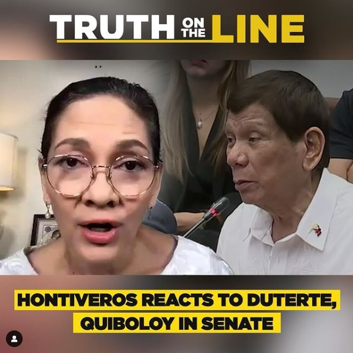

“How very rude,” Senator Risa Hontiveros said of former president Rodrigo Duterte’s demeanor during Monday’s hearing, wherein the former president spewed out expletives and pointed his fingers at senators who questioned his alleged policy of exterminating drug suspects."
MANILA, Philippines — If former president Rodrigo Duterte again uses foul language during the next Senate hearing on his bloody crackdown on drugs, Sen. Risa Hontiveros will not hesitate to cite him in contempt.
“How very rude,” Hontiveros said of Duterte’s demeanor during Monday’s hearing, wherein the former president spewed out expletives and pointed his fingers at senators who questioned his alleged policy of exterminating drug suspects.
“He is a visitor to our house, the Senate, but a visitor should not throw garbage there. Our rules state that there should be observance of parliamentary behavior or decorum. Duterte’s rudeness and shamelessness are the worst I’ve seen from a resource person,” Hontiveros told The Philippine STAR’s online show “Truth on the Line,” which was launched yesterday.
Asked if the Senate would hold Duterte in contempt if he uses foul language again at his next attendance, Hontiveros said: “If push comes to shove, that is always among the broad powers of the committee – cite a resource person for unruly behavior.”
Being cited in contempt could mean getting detained.
She said she would not hesitate to have Duterte cited in contempt if he again liberally laces his statements with profanities.
“In our investigation on extrajudicial killings in his war on drugs, no one – not even a former president – is above the law,” Hontiveros told STAR editor-in-chief Ana Marie Pamintuan, host of Truth on the Line.
But there is a chance Duterte may no longer be invited to the next scheduled hearing, because his admission under oath of having organized the Davao death squad (DDS) composed of gangsters and rich people may be more than enough for the committee, according to Senate Minority Leader Aquilino Pimentel III, who presided over last Monday’s hearing by a sub-committee of the Blue Ribbon committee.
“As of the moment, I see no need. If some other senators see the need, then if they manifest it, I will entertain the idea. But as of the moment, no one has,” Pimentel said on Wednesday.
“We have a lot of material to work with. Let the material stay. Let criminal law experts study very well the material with the committee,” he added. There is no schedule yet for the next hearing.
The nine-hour hearing on Monday was marred by Duterte’s profanities, often greeted with applause by his supporters in the gallery.
This irked Pimentel, who warned them they would be asked to leave if they persisted in their rowdy behavior.
Duterte, Hontiveros said, tried to “hijack” the Senate investigation with his expletive-laden defense of his crackdown and rambling about how he managed to stamp out crime in Davao City through violence.
“Like how he hypnotized the public during his six years as president, he tried to hijack the hearing by instilling fear, a spell which he also cast on the communities affected by the drug war,” she said.
“The light that dispelled that darkness came from the families and allies of the drug war victims who attended the Monday hearing to confront their ‘Punisher,’” Hontiveros added.
“They are the source of the magic to break the spell that Duterte thought he could cast again to spread doom,” Hontiveros said.

No contempt at quad
At the House of Representatives, Rep. Benny Abante said the quad committee, which he co-chairs, would send a formal invitation to Duterte to attend the proceedings.
Asked what the panel would do in case Duterte attends and peppers his statements with expletives, Abante told “Storycon” on One News last Wednesday that they would reprimand the former president, but would likely not cite him in contempt.
Instead, Abante said the committee could raise a point of order and remind Duterte to respect the House.
Strongman myth
Duterte’s six-year iron fist rule showed a segment of the Philippine society preferring quick justice over due process, Hontiveros said.
“While there are remnants of that culture, slowly, we are waking up from that nightmare and breaking from the strongman myth, perpetrated by Duterte so he could do terrible things, like his bloody war against the poor,” the senator said.
“Justice is slow in our country, but instead of shortcuts, we should strive for alternatives, such as harm reduction and a public health approach. A war on drugs will not solve the problem of drug supply and problematic drug use,” she added.
Duterte’s testimony made under oath that there were death squad killings in Davao City could be used against him both by the Department of Justice (DOJ) and the International Criminal Court (ICC) based in The Hague.
“The basis exists in truth and fact. His statements under oath are put on record. These are now official evidence which can be used by the DOJ and the ICC for case build-up,” Hontiveros said.
“There is now a fighting chance to convict and sentence him,” she added. Duterte during the Senate hearing said he takes “full, moral, and legal responsibility” for his nationwide antidrug campaign that killed over 6,200 drug suspects, a death toll based on government estimates but which human rights groups said could reach up to 30,000 dead.
Hontiveros said there is a glimmer of hope for victims with the forwarding of the Senate transcriptions of Duterte’s admission to the ICC, as announced by former senator Antonio Trillanes IV.
Duterte’s Senate ally Ronald dela Rosa – his former police chief – downplayed the admission as a “joke” meant to scare criminals.
“Former senator Trillanes has announced that ICC has received the transcript of our hearing for its consideration to hold Duterte accountable,” Hontiveros said.
Hontiveros renewed her call for Malacañang to amend Duterte’s freedom of information executive order that hampered the access to the Commission on Human Rights to drug war documents held by the police.
ICC closely following developments
In a statement to The STAR, the Office of the Prosecutor of the ICC (ICC-OTP) said it is “closely following” developments in the Philippines where the Senate and the House are conducting separate investigations.
The ICC-OTP said its investigations are built from a wide range of sources, and may include inputs from government and private institutions.
“They can encompass Article 15 communications, information from States, international partners and civil society, open-source information and the direct collection of evidence by the Office, including interviews with witnesses,” it said in a statement.
“In this light, the Office follows developments in the Philippines closely, as to their relevance for its ongoing investigation,” it added.
Article 15 communications refer to information sent to the ICC prosecutor in relation to alleged crimes that fall within the tribunal’s jurisdiction. It was provided for under Article 15 of the Rome Statute, the treaty that created the ICC.
According to the ICC-OTP, its investigation focuses on crimes allegedly committed in the Philippines from Nov. 1, 2011 to March 16, 2019, the period when the country was officially a signatory to the Rome Statute.
Aside from the Duterte administration’s drug war, the investigation is also looking at the supposed crimes committed by the so-called Davao Death Squad.
During the Senate Blue Ribbon subcommittee hearing last Monday, Duterte admitted having organized a death squad and even tagged Senator Dela Rosa, a former police chief, as part of the group.
Hontiveros earlier urged the ICC prosecutor to use Duterte’s statements in its investigation.
In its statement, the ICC-OTP said it “does not comment on operational matters with respect to ongoing investigations.”
“Confidentiality is a crucial aspect of the OTP’s activities. This is essential not only to protect the integrity of the investigations but also to ensure the safety and security of victims, witnesses and all those with whom the Office interacts,” it added.
‘Neither hero nor god’
Days after Duterte’s controversial Senate appearance, a senior House member warned the public against being enraptured with Duterte as he is neither a hero nor God who could just flagrantly commit crimes like ordering policemen to kill drug suspects at will.“He is not a hero. He is not God. He is not the law. He is not above the law. He is a plague,” Rep. Rolando Valeriano of Manila’s second district asserted, noting that the former president does not have the power to exonerate rogue policemen or hired guns who committed extrajudicial killings in his drug war.
“It’s not up to him to determine who are criminally, civilly, and administratively liable for crimes committed during his brutal war on drugs. His acceptance of legal responsibility for the criminal and inhumane war on drugs does not absolve others of liability,” he added.
In a statement, meanwhile, family members of activists killed during the Duterte administration have urged lawmakers not to shield the former president from prosecution.
“For you, as senators, to now shield such an individual undercuts not only our legal system but the very trust that the Filipino people placed in you,” lawyer VJ Topacio and Lean Porquia said in a joint statement.
“Protecting a former leader who has openly admitted to orchestrating and enabling mass killings is a direct betrayal of that oath,” they said.
Topacio’s parents, peace consultants Agaton Topacio and Eugenia Magpantay, were killed in an alleged shootout with police officers in November 2020. Porquia’s father, Jose Reynaldo Porquia, was gunned down in Iloilo in May of the same year. — Delon Porcalla, Emmanuel Tupas